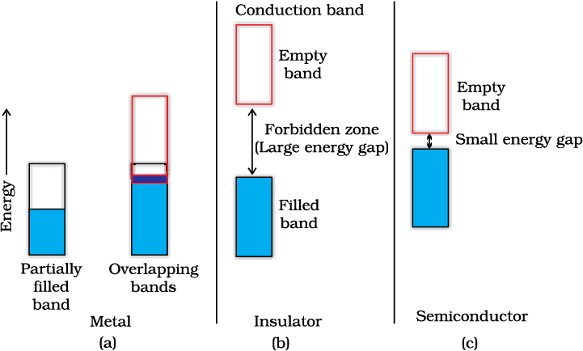
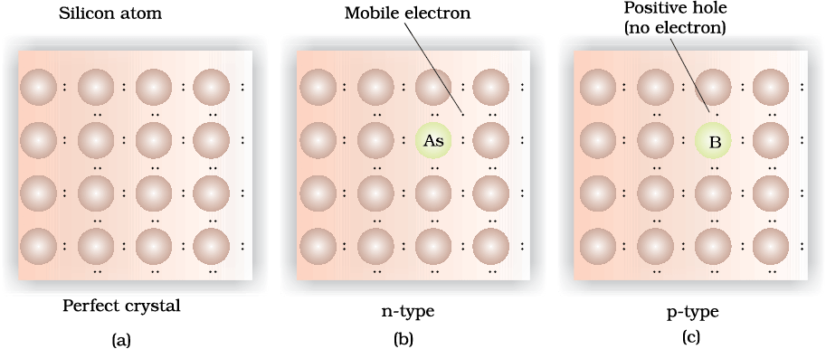

Solids exhibit an amazing range of electrical conductivities, extending over 27 orders of magnitude ranging from 10–20 to 107 ohm–1m–1. Solids can be classified into three types on the basis of their conductivities.
(i) Conductors: The solids with conductivities ranging between 104 to 107 ohm–1m–1 are called conductors. Metals have conductivities in the order of 107 ohm–1m–1 are good conductors.
(ii) Insulators : These are the solids with very low conductivities ranging between 10–20 to 10–10 ohm–1m–1.
(iii) Semiconductors : These are the solids with conductivities in the intermediate range from 10–6 to 104 ohm–1m–1.
A conductor may conduct electricity through movement of electrons or ions. Metallic conductors belong to the former category and electrolytes to the latter.
Metals conduct electricity in solid as well as molten state. The conductivity of metals depend upon the number of valence electrons available per atom. The atomic orbitals of metal atoms form molecular orbitals which are so close in energy to each other as to form a band. If this band is partially filled or it overlaps with a higher energy unoccupied conduction band, then electrons can flow easily under an applied electric field and the metal shows conductivity.
If the gap between filled valence band and the next higher unoccupied band (conduction band) is large, electrons cannot jump to it and such a substance has very small conductivity and it behaves as an insulator.
In case of semiconductors, the gap between the valence band and conduction band is small. Therefore, some electrons may jump to conduction band and show some conductivity. Electrical conductivity of semiconductors increases with rise in temperature, since more electrons can jump to the conduction band. Substances like silicon and germanium show this type of behaviour and are called intrinsic semiconductors.
The conductivity of these intrinsic semiconductors is too low to be of practical use. Their conductivity is increased by adding an appropriate amount of suitable impurity. This process is called doping. Doping can be done with an impurity which is electron rich or electron deficient as compared to the intrinsic semiconductor silicon or germanium. Such impurities introduce electronic defects in them.

Distinction among (a) metals (b) insulators and (c) semiconductors. In each case, an unshaded area represents a conduction band.
Silicon and germanium belong to group 14 of the periodic table and have four valence electrons each. In their crystals each atom forms four covalent bonds with its neighbours. When doped with a group 15 element like P or As, which contains five valence electrons, they occupy some of the lattice sites in silicon or germanium crystal. Four out of five electrons are used in the formation of four covalent bonds with the four neighbouring silicon atoms. The fifth electron is extra and becomes delocalised. These delocalised electrons increase the conductivity of doped silicon (or germanium). Here the increase in conductivity is due to the negatively charged electron, hence silicon doped with electron-rich impurity is called n-type semiconductor.
Silicon or germanium can also be doped with a group 13 element like B, Al or Ga which contains only three valence electrons. The place where the fourth valence electron is missing is called electron hole or electron vacancy. An electron from a neighbouring atom can come and fill the electron hole, but in doing so it would leave an electron hole at its original position. If it happens, it would appear as if the electron hole has moved in the direction opposite to that of the electron that filled it. Under the influence of electric field, electrons would move towards the positively charged plate through electronic holes, but it would appear as if electron holes are positively charged and are moving towards negatively charged plate. This type of semi conductors are called p-type semiconductors.

Creation of n-type and p-type semiconductors by doping groups 13 and 15 elements.
Various combinations of n-type and p-type semiconductors are used for making electronic components. Diode is a combination of n-type and p-type semiconductors and is used as a rectifier. Transistors are made by sandwiching a layer of one type of semiconductor between two layers of the other type of semiconductor. npn and pnp type of transistors are used to detect or amplify radio or audio signals. The solar cell is an efficient photo-diode used for conversion of light energy into electrical energy.
Germanium and silicon are group 14 elements and therefore, have a characteristic valence of four and form four bonds as in diamond. A large variety of solid state materials have been prepared by combination of groups 13 and 15 or 12 and 16 to simulate average valence of four as in Ge or Si. Typical compounds of groups 13 – 15 are InSb, AlP and GaAs. Gallium arsenide (GaAs) semiconductors have very fast response and have revolutionised the design of semiconductor devices. ZnS, CdS, CdSe and HgTe are examples of groups 12 – 16 compounds. In these compounds, the bonds are not perfectly covalent and the ionic character depends on the electronegativities of the two elements.
It is interesting to learn that transition metal oxides show marked differences in electrical properties. TiO, CrO2 and ReO3 behave like metals. Rhenium oxide, ReO3 is like metallic copper in its conductivity and appearance. Certain other oxides like VO, VO2, VO3 and TiO3 show metallic or insulating properties depending on temperature.